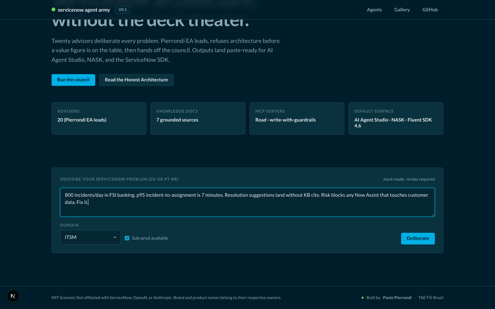
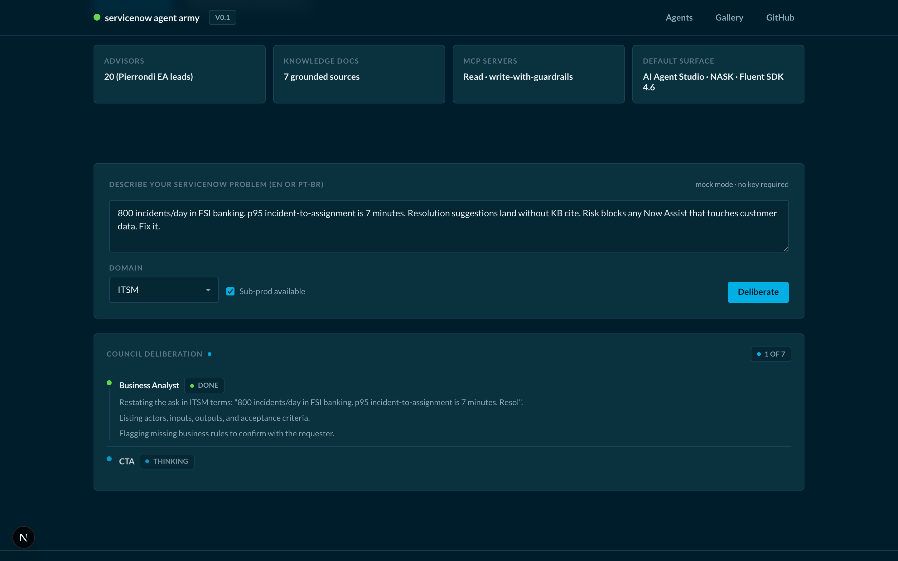

servicenow agent army
· Codex + SDK pipeline
From council
to AI Agent Studio.
to AI Agent Studio.
Four gates. One human approval. Then GPT Codex runs the official SDK.
The pipeline
Four gates before
any line of code runs.
any line of code runs.
GATE 1
Scope
Tables · surfaces · integration points listed explicitly.
GATE 2
Necessity
AI use case or structural fix? Anti-pattern check.
GATE 3
ROI
90-day metric · value with source · credit cost sized.
GATE 4
Architecture
Dry-run · approval token · audit log · 24h rollback.
Twenty advisors deliberate.
Pierrondi EA leads.
Pierrondi EA leads.
Council validates the spec the moment a human approves the four gates.



→
Human approves explicitly
Four green.
Code runs.
Code runs.
Gate 1
Scope✓
Scope✓
Gate 2
Necessity✓
Necessity✓
Gate 3
ROI✓
ROI✓
Gate 4
Architecture✓
Architecture✓
No auto-deploy. Ever.
Codex runs the official SDK.
ServiceNow Fluent SDK 4.6 · deterministic · auditable · sub-prod is the ceiling.
$ codex run servicenow-army deploy
--spec agent-spec.json --target sub-prod
✓ now-sdk init — scope x_sn_army_draft
✓ now-sdk add ai-agent — id itsm-agent-9169
✓ now-sdk add nask-skill — id itsm-itsm-9169
✓ now-sdk build — ATF regression staged
✓ now-sdk deploy — target sub-prod
→ AI Agent Studio · sub-prod · registered
v0.1 alpha · MIT · open source
Outcome.
Then output.
Then output.
github.com/paulopierrondi/servicenow-agent-army
Paulo Pierrondi · TAE FSI Brazil · ServiceNow
servicenow agent army · c05 codex pipeline